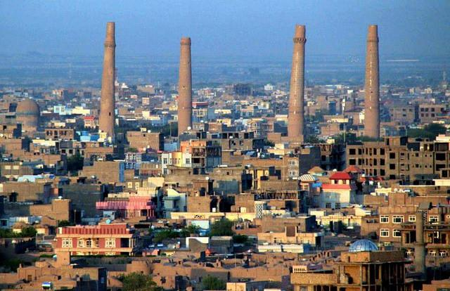
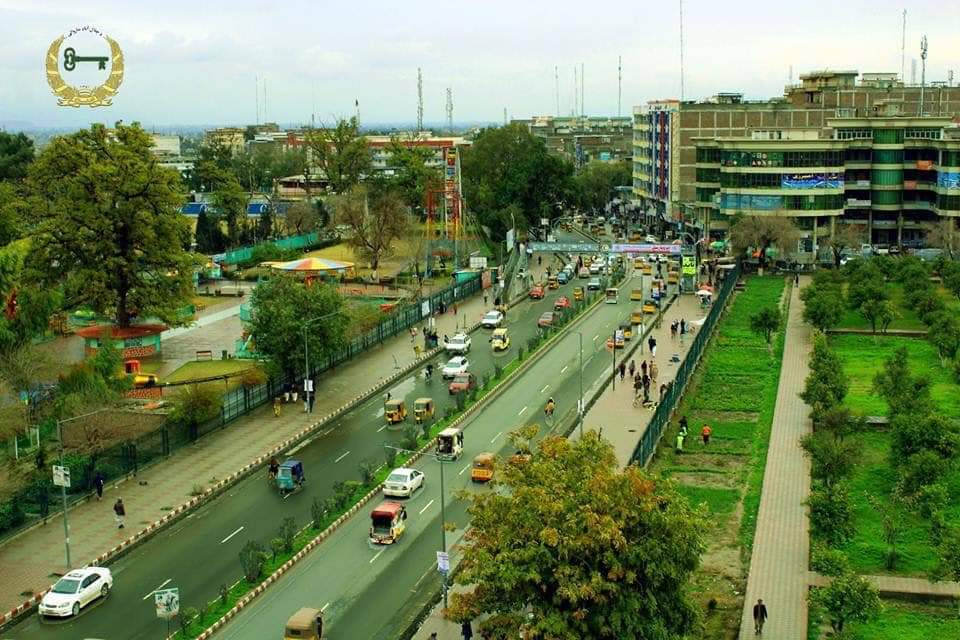
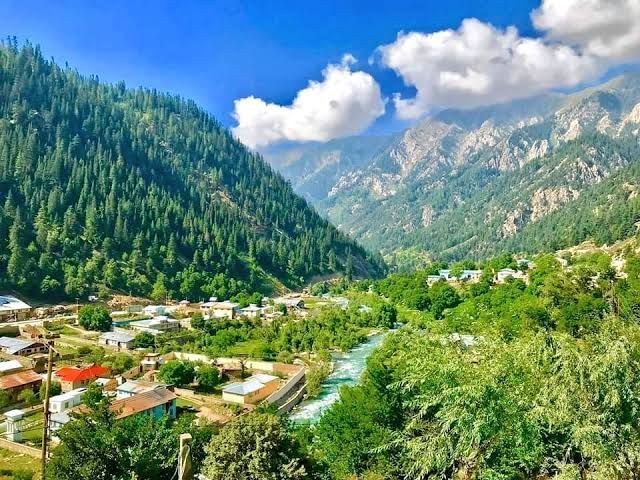
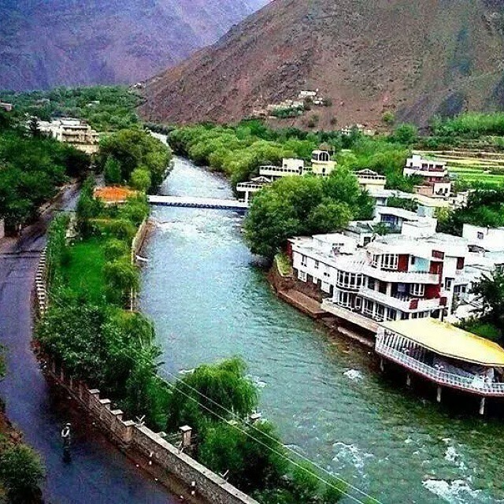

Herat
Herat is Known for poetry and art. Herat is one of the the oldest and most culturally rich cities in Afghanistan. it has a long history of literature, architecture, and craftmanship. Herat's famous landmarks include the Herat Citadel and the stunning Friday Mosque. The City is also known for its traditional carpets, delicious foods, and hospitable people.
.jpeg)
Mazar-i-Sharif
Mazar-i-Sharif is a vibrant city in northern Afghanistan, known for its beautiful Blue Mosque, also called the Shrine of Hazrat Ali. It is a center of culture, history, and spiritual significance. Mazar is famous for its colorful Nawroz (New Year) celebrations, traditional clothes, and delicious local dishes like Qabeli Palaw. The city reflects a blend of tradition, peace, and Afghan hospitality.

Bamiyan
Bamiyan is a peaceful city in central Afghanistan, known for its breathtaking natural beauty and rich history. It was once home to the famous giant Buddha statues carved into cliffs, symbolizing its Buddhist past. Today, Bamiyan is celebrated for its stunning valleys, ancient caves, and the vibrant culture of the Hazara people. It is a place where history and nature come together.

Jalalabad
Jalalabad is a vibrant city in eastern Afghanistan, known for its warm climate, beautiful gardens, and delicious fruits—especially oranges. Located near the Kabul River, it has long been a center of trade and culture. Jalalabad blends tradition with modern life and is famous for its hospitality and rich Pashtun heritage.

Nuristan
Nuristan is a remote and mountainous province in eastern Afghanistan, known for its stunning natural beauty and unique culture. The people of Nuristan have their own language and traditions, distinct from other Afghan ethnic groups. Covered in forests and rivers, Nuristan is often called the “Land of Light.” It remains one of the most untouched and mysterious regions of the country.

Panjshir
Panjshir is a beautiful valley city in northeastern Afghanistan, surrounded by tall mountains. It is famous for its natural scenery and strong sense of pride among its people. Panjshir played an important role in Afghanistan’s history, especially during resistance movements. The people are known for their bravery, and the valley is rich in cultural heritage and tradition.
.jpeg)